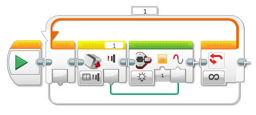

					<table cellpadding="0" cellspacing="0" border="0"><tbody><tr><td>
	
						<h1>使用触动传感器<a name="top"></a></h1>
		<div id="block_1293" class="block blockHeader">
				<table cellspacing="0" cellpadding="0" border="0">
			<tbody><tr>
				<td valign="top" class="image"></td>
				<td valign="top" class="description"><div class="text-wrapper">触动传感器检测是否按入了传感器正面的按钮。例如，可以使用触动传感器检测机器人在驱动时与某个物体碰撞的情况。还可以使用手指按压触动传感器以触发某个动作。</div></td>
			</tr>
		</tbody></table>
			</div>
	<div id="block_1322" class="block blockStep">
		<div class="title"></div>
		<div class="description">触动传感器可以指示它是否被按入。它不能测量按入按钮的程度或力度。触动传感器提供逻辑数据（“真”或“伪”）。触动传感器按钮的位置称为其“状态”，按入时为“真”，未按入（松开）时为“伪”。<br>
<br>
触动传感器还可以跟踪在过去是否按压然后松开了按钮。这称为“碰撞”，例如可用于检测手指按压。有关更多信息，请参见<a href="./index.html?id=UsingSensors_Touch#UnderstandingBumped">了解“碰撞”</a>。</div>
	</div>
	<div id="block_1294" class="block blockChaptor">
		<div class="title"><a name="TouchSensorData" style="position:relative; top:-10px;"></a>触动传感器数据</div>
		<div class="description">触动传感器可以提供以下数据：</div>
	</div>
	<div id="block_1295" class="block blockTable ">
		<table class="blockTable">
		

			<tbody><tr>
<th>数据</th><th>类型</th><th>备注</th>			</tr>
<tr><td>状态 <a name="State" style="position:relative; top:-10px;"></a></td><td>逻辑</td><td>如果按入了按钮，则为“真”，否则为“伪”。</td></tr><tr><td>按压 <a name="Pressed" style="position:relative; top:-10px;"></a></td><td>逻辑</td><td>如果按压，则为“真”，否则为“伪”（与“状态”相同）。</td></tr><tr><td>松开 <a name="Released" style="position:relative; top:-10px;"></a></td><td>逻辑</td><td>如果按压，则为“伪”，否则为“真”（与“状态”相反）。</td></tr><tr><td>碰撞 <a name="Bumped" style="position:relative; top:-10px;"></a></td><td>逻辑</td><td>如果在过去按压并松开了按钮，则为“真”。下一次“碰撞”发生因而需要新的按压和松开。</td></tr>		</tbody></table>
	</div>
	<div id="block_1296" class="block blockChaptor">
		<div class="title"><a name="ExamplesUsingPressed" style="position:relative; top:-10px;"></a>“按压”使用示例</div>
		<div class="description">下面是有关如何使用触动传感器的“按压”数据的一些示例。</div>
	</div>
	<div id="block_1297" class="block blockExample">
		<div class="title">示例 1：驱动至按压了触动传感器</div>
		<div class="image"></div>
		<div class="description">此程序使机器人向前直线驱动，直至按压了触动传感器，随后机器人停止。它使用“触动传感器 － 比较 － 触动”模式的<a href="./index.html?id=Wait">等待</a>模块测试“按压”。</div>
	</div>
	<div id="block_1298" class="block blockTip">
		<div class="title">提示和技巧</div>
		<div class="boxContent">
			<div class="description">当需要在等待传感器期间驱动时，请记住使用移动转向模块的“开启”模式。</div>
				</div>
	</div>
	<div id="block_1300" class="block blockExample">
		<div class="title">示例 2：每当按住触动传感器时运行电机（方法 1）</div>
		<div class="image"></div>
		<div class="description">此程序每当按压并按住触动传感器时便使电机运行。每当松开触动传感器时，电机便停止。此程序使用“触动传感器 － 比较 － 触动”模式的<a href="./index.html?id=CaseSelector">切换</a>模块测试“按压”。测试的结果用于选择开启或关闭电机。会在<a href="./index.html?id=LoopCondition">循环</a>中连续重复进行测试。</div>
	</div>
	<div id="block_1301" class="block blockExample">
		<div class="title">示例 3：每当按住触动传感器时使程序块状态灯闪烁</div>
		<div class="image"></div>
		<div class="description">此程序以橙色开启程序块状态灯，每当按住触动传感器时使其闪烁。它使用“测量”模式的<a href="./index.html?id=TouchSensor">触动传感器</a>模块获取触动传感器的状态。结果使用逻辑数据线连接到程序块按钮模块的“闪烁”输入。</div>
	</div>
	<div id="block_1302" class="block blockChaptor">
		<div class="title"><a name="ExamplesUsingReleased" style="position:relative; top:-10px;"></a>“松开”使用示例</div>
		<div class="description">下面是有关如何使用触动传感器的“松开”数据的一些示例。</div>
	</div>
	<div id="block_1303" class="block blockExample">
		<div class="title">示例 4：每当发生触动传感器按压时发出蜂鸣声</div>
		<div class="image"></div>
		<div class="description">每当按压触动传感器时，此程序便发出短暂的音调。对于每次按压，只发出一声音调。此程序使用“触动传感器 － 比较 － 触动”模式的<a href="./index.html?id=Wait">等待</a>模块测试“按压”，然后另一个<a href="./index.html?id=Wait">等待</a>模块等待“松开”，再使循环继续。</div>
	</div>
	<div id="block_1304" class="block blockTip">
		<div class="title">提示和技巧</div>
		<div class="boxContent">
			<div class="description">如果从此程序中删除针对“松开”的等待，则会发现只要按住触动传感器，音调便会一直重复。这是因为如果已按压触动传感器，则针对“按压”的等待会立即继续执行下一个模块。尝试！</div>
				</div>
	</div>
	<div id="block_1306" class="block blockExample">
		<div class="title">示例 5：每当按住触动传感器时运行电机（方法 2）</div>
		<div class="image"></div>
		<div class="description">此程序每当按压并按住触动传感器时便使电机运行。每当松开触动传感器时，电机便停止。此程序使用“触动传感器 － 比较 － 触动”模式的<a href="./index.html?id=Wait">等待</a>模块等待“按压”以启动电机，然后另一个<a href="./index.html?id=Wait">等待</a>模块等待“松开”，再停止电机。会在<a href="./index.html?id=LoopCondition">循环</a>中重复进行该过程。</div>
	</div>
	<div id="block_1307" class="block blockTip">
		<div class="title">提示和技巧</div>
		<div class="boxContent">
			<div class="description">此程序使用不同方法实现与上面的示例 2 相同的目的。</div>
				</div>
	</div>
	<div id="block_1310" class="block blockChaptor">
		<div class="title"><a name="UnderstandingBumped" style="position:relative; top:-10px;"></a>了解“碰撞”</div>
		<div class="description">除了告知当前是按压还是松开了触动传感器按钮，触动传感器还跟踪在过去是否按压并松开了它，这称为“碰撞”。这样可以方便地查明是否按压了触动传感器（如按钮），而无需不断检查是否按压，然后等待松开。<br>
<br>
在触动传感器指示受到了碰撞之后，它不会再次指示“碰撞”，直至又一次按压然后松开了触动传感器。例如，这样可以方便地确保每次按压对应于仅发生一次的动作。 <br>
<br>
下表以一系列步骤的形式显示了一个示例，其中两次按压并松开触动传感器。下表显示在每个动作之后测试“按压”、“松开”和“碰撞”的程序的结果。</div>
	</div>
	<div id="block_1311" class="block blockTable ">
		<table class="blockTable">
		

			<tbody><tr>
<th>步骤</th><th>动作</th><th>按压</th><th>松开</th><th>碰撞</th>			</tr>
<tr><td>1 <a name="1" style="position:relative; top:-10px;"></a></td><td>按钮开始时松开</td><td>伪</td><td>真</td><td>伪</td></tr><tr><td>2 <a name="2" style="position:relative; top:-10px;"></a></td><td>按入按钮</td><td>真</td><td>伪</td><td>伪</td></tr><tr><td>3 <a name="3" style="position:relative; top:-10px;"></a></td><td>松开按钮</td><td>伪</td><td>真</td><td>真</td></tr><tr><td>4 <a name="4" style="position:relative; top:-10px;"></a></td><td>按钮仍然松开，程序再次测试触动传感器</td><td>伪</td><td>真</td><td>伪</td></tr><tr><td>5 <a name="5" style="position:relative; top:-10px;"></a></td><td>第二次按压按钮</td><td>真</td><td>伪</td><td>伪</td></tr><tr><td>6 <a name="6" style="position:relative; top:-10px;"></a></td><td>按住按钮，程序再次测试触动传感器</td><td>真</td><td>伪</td><td>伪</td></tr><tr><td>7 <a name="7" style="position:relative; top:-10px;"></a></td><td>松开按钮</td><td>伪</td><td>真</td><td>真</td></tr><tr><td>8 <a name="8" style="position:relative; top:-10px;"></a></td><td>按钮仍然松开，程序再次测试触动传感器</td><td>伪</td><td>真</td><td>伪</td></tr>		</tbody></table>
	</div>
	<div id="block_1312" class="block blockStep">
		<div class="title"></div>
		<div class="description">请注意，当按住按钮时，触动传感器会在每次程序测试它时继续指示“按压”。但是，在松开按钮之后，传感器在程序第一次测试“碰撞”时只会指示“碰撞”。传感器不会再次指示“碰撞”，直至又一次按压并松开了它。</div>
	</div>
	<div id="block_1313" class="block blockChaptor">
		<div class="title"><a name="ExamplesUsingBumped" style="position:relative; top:-10px;"></a>“碰撞”使用示例</div>
		<div class="description">下面显示了有关如何使用触动传感器的“碰撞”数据的一些示例。</div>
	</div>
	<div id="block_1314" class="block blockExample">
		<div class="title">示例 6：在按压触动传感器时更改显示</div>
		<div class="image"></div>
		<div class="description">此程序会在每次碰撞（按压然后松开）触动传感器时更改显示，使 EV3 程序块显示屏显示“Zero”，然后显示“One”，再然后显示“Two”。</div>
	</div>
	<div id="block_1315" class="block blockTip">
		<div class="title">提示和技巧</div>
		<div class="boxContent">
			<div class="description">如果更改此程序中的等待模块以测试“按压”而不是“碰撞”，则会发现显示会从“Zero”直接变为“Two”，跳过了“One”。尝试！这是因为显示模块执行的速度太快，这样当第二个“等待按压”测试进行时，您的手指仍处于第一次按压中按住按钮的状态，因此第二个等待会立即结束。当测试出“碰撞”时，对于每个不同的按压，只有一个测试会成功。</div>
				</div>
	</div>
	<div id="block_1317" class="block blockExample">
		<div class="title">示例 7：以某种模式驱动，直至按压触动传感器</div>
		<div class="image"></div>
		<div class="description">此程序使机器人重复直线驱动然后转弯的模式，直至按压触动传感器（充当机器人的“停止”按钮）。在按压触动传感器之后，机器人会在下一个转弯之后停止。此程序使用“触动传感器”模式的<a href="./index.html?id=LoopCondition">循环</a>重复驱动，直至碰撞（按压然后松开）触动传感器。</div>
	</div>
	<div id="block_1318" class="block blockTip">
		<div class="title">提示和技巧</div>
		<div class="boxContent">
			<div class="description">如果使用“按压”而不是“碰撞”尝试此程序，则会发现按压触动传感器通常不会使机器人停止。尝试！这是因为循环仅在两个移动模块完成之后短暂测试传感器。如果在移动模块正在运行期间按压并松开传感器，则不会发现“按压”状态。使用“碰撞”时，触动传感器会记住在过去按压并松开了它。</div>
				</div>
	</div>
	<div id="block_1320" class="block blockChaptor">
		<div class="title"><a name="TouchSensorBlocksAndModes" style="position:relative; top:-10px;"></a>触动传感器模块和模式</div>
		<div class="description">下表显示可以与触动传感器一起使用的所有编程模块和模式。</div>
	</div>
	<div id="block_1321" class="block blockTable ">
		<table class="blockTable">
		

			<tbody><tr>
<th>模块</th><th>模式</th><th>用途</th>			</tr>
<tr><td><a href="./index.html?id=Wait">等待</a></td><td>触动传感器 － 比较</td><td>等待触动传感器受到按压、松开或碰撞。</td></tr><tr><td><a href="./index.html?id=Wait">等待</a></td><td>触动传感器 － 更改</td><td>等待触动传感器状态更改。</td></tr><tr><td><a href="./index.html?id=LoopCondition">循环</a></td><td>触动传感器</td><td>重复模块序列，直至触动传感器受到按压、松开或碰撞。</td></tr><tr><td><a href="./index.html?id=CaseSelector">切换</a></td><td>触动传感器</td><td>根据是否按压、松开或碰撞了触动传感器，在两个模块序列之间进行选择。</td></tr><tr><td><a href="./index.html?id=TouchSensor">触动传感器</a></td><td>测量</td><td>通过逻辑数据线获取当前触动传感器状态（是否“按压”）。</td></tr><tr><td><a href="./index.html?id=TouchSensor">触动传感器</a></td><td>比较</td><td>测试触动传感器是否受到按压、松开或碰撞，并通过逻辑数据线获取结果。</td></tr><tr><td>数据日志</td><td></td><td>请参见“数据日志”。</td></tr>		</tbody></table>
	</div>
	
			<div id="quick">
				<div class="header"><a href="./index.html?id=UsingSensors_Touch#header">触动</a></div>
					<div class="quickText">快速链接</div>
					
					<ul>
	<li><a href="./index.html?id=UsingSensors_Touch#TouchSensorData">触动传感器数据</a></li><li><a href="./index.html?id=UsingSensors_Touch#ExamplesUsingPressed">“按压”使用示例</a></li><li><a href="./index.html?id=UsingSensors_Touch#ExamplesUsingReleased">“松开”使用示例</a></li><li><a href="./index.html?id=UsingSensors_Touch#UnderstandingBumped">了解“碰撞”</a></li><li><a href="./index.html?id=UsingSensors_Touch#ExamplesUsingBumped">“碰撞”使用示例</a></li><li><a href="./index.html?id=UsingSensors_Touch#TouchSensorBlocksAndModes">触动传感器模块和模式</a></li>					</ul>
			</div>
	
	</td></tr></tbody></table>